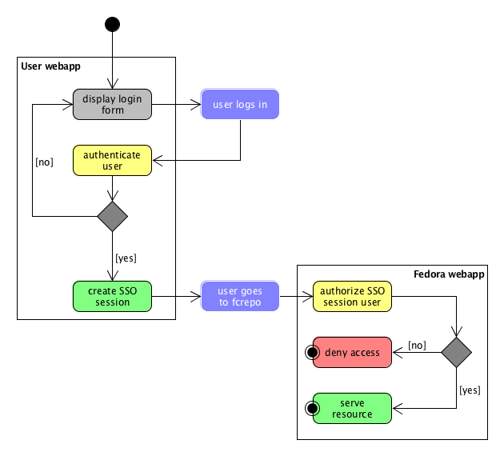

University of Maryland Libraries
DC Fedora User Group Update
Peter Eichman
Ben Wallberg
Joshua Westgard
April 27, 2016
Overview
Architecture Overview (Josh)
Repository Status (Peter)
Hydra Status (Ben)
Hydra/fcrepo Thoughts (Josh)
Architecture Overview
- 3 contexts
- Administrative
- Repository
- Access
- 3 user groups
- 3 storage locations
- Fcrepo
- Image Server
- Preservation Storage
Architecture Overview
- Distinct spheres of activity
- Loose coupling of components
- Location determined by function rather
than convenience
- Repository-centric ecosystem
Development Server
- Fedora 4.5.0
- WebAC
- Internal Audit Service
- Supporting stack
- Apache
- Tomcat
- Karaf
- Fuseki
- Solr
- Customized Authentication
Authentication
- No authentication required
- No authentication challenges from Tomcat
- Let Fedora allow/deny access to anonymous users
- Requires customized web.xml
- Custom authentication with Tomcat
- Allow pre-emptive authentication for clients
- HTTP Basic
- Client certificates
- Interactive authentication for Fedora REST UI
Pre-emptive Authentication
- Implemented with Tomcat Valves
-
https://github.com/umd-lib/optional-authn-valve
- OptionalBasicAuthenticator
- OptionalSSLAuthenticator
- Injects a user principal into the request
- No credentials = no user principal
- Fedora still sees requests with no user principal
Pre-emptive Authentication
Interactive Authentication
Interactive Authentication

Authorization
- WebAC
- Collection for ACLs
- Collection for groups ("Agent Classes")
Milestones
- Staging Server: May 2016
- Production Server: July 2016
Adopt Rails / Hydra ?
- Benefits
- Rails for in-house application
- Growing suite of Hydra applications
- Community support
- Risks
- Hiring Rails developers?
- UMD has success hiring from DC area Java developer pool, not from Library pool
Hydra - How to get started?
- Developer time diverted to Entrepeneurship / revenue generation
- Hosting Services
- Software Development Services
- Use funds to hire to hourly contract developer
- Unsuccesful hiring developer with Hydra experience
- Did hire local Rails developer
Hydra contract developer
- Objectives
- train on Hydra / Blacklight / Fedora stack
- evaluate and select existing Hydra application as baseline
- jumpstart UMD Hydra implementation
- provide Rails / Hydra training to in-house developers
- Accomplished (December - February)
- training
- evaluation and selection of Sufia as baseline
- just began creation of Rails app extending Sufia
- six weeks of labor, then resignation of developer
What next?
- Completed In-House Rails Training - 3 developers x 4 weeks
- Look more closely at Hydra-in-a-Box
- Hourly contractor for Rails applications
Hydra/Fcrepo Thoughts
- Hydra continues to be the leading candidate
for our admin interface
- "One Repository, Many Heads" model
- Goal: A modular and light-handed suite of admin tools
- HyBox option?
- Hydra Access Controls, PCDMW?
Thank you!
Peter Eichman (peichman@umd.edu)
Ben Wallberg (wallberg@umd.edu)
Joshua Westgard (westgard@umd.edu)
/